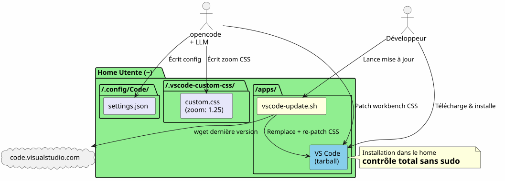

VS Code nella Home: installazione locale e personalizzazione dei caratteri senza sudo
Publié le 17 April 2026
Perché installare VS Code in`/opt`o via`apt`quando si può posizionarlo nella propria home e trasformare il proprio IDE in un terreno di gioco senza mai digitare`sudo`Ecco il racconto di un’installazione locale seguito da una dura lotta per ingrandire i caratteri del menu e dell’esploratore di file.
- indice
-
[]
Panoramica del percorso

Il Perché : VS Code nella Home
Il problema con l’installazione di sistema
VS Code installato via`apt`, dnf`o in/opt`blocca i file dell’applicazione dietro i privilegi root. Qualsiasi modifica del CSS nativo, di`product.json`o della cartella di installazione richiede`sudo`.
Ora, quando si utilizzaopencode# Gradle Integration JBake can be integrated into Gradle builds using the JBake Gradle plugin or by calling the JBake CLI directly:
----
tasks.register<JavaExec>("bake") {
mainClass.set("org.jbake.launcher.Main")
classpath = configurations["jbake"]
args = listOf(projectDir.absolutePath, "$buildDir/jbake")
}
----
(tool CLI per pilotare un LLM sul proprio codice), l'agente ha bisogno di potere :
* Scrivere nei file di configurazione`~/.config/Code/User/settings.json`) — ça, c'est déjà dans le home
* Modifica le risorse dell'IDE (CSS del workbench,`product.json`) per le personalizzazioni avanzate — questo, è bloccato senza sudo
=== La soluzione : un'installazione locale
Si scarica l'archivio tarball ufficiale e lo si decomprime direttamente in`~/apps/`:
[source,bash]
----
mkdir -p ~/apps
cd ~/apps
wget "https://code.visualstudio.com/sha/download?build=stable&os=linux-x64" -O vscode.tar.gz
tar -xzf vscode.tar.gz
rm vscode.tar.gz
----
Il binario si trova allora in`~/apps/VSCode-linux-x64/bin/code`. Nessuno`sudo`non è necessario per leggere, modificare o sostituire qualsiasi file sotto`~/apps/VSCode-linux-x64/`.
=== Vantaggi concreti
[plantuml,vscode-local-vs-system,svg]
----
@startuml
skinparam backgroundColor #FEFEFE
rectangle "Installazione Sistema\n(/opt, apt, dnf)" #LightCoral {
card "VS Code proprietà di root" {
[CSS du workbench : sudo requis]
[product.json : sudo requis]
[Dossier d'install : non modifiable]
}
}
rectangle "Installazione Home
(~/apps)" #LightGreen {
card "VS Code proprietà dell'utente" {
[CSS du workbench : libre]
[product.json : libre]
[Dossier d'install : libre]
[Script update maison]
}
}
"Installazione Sistema\n(/opt, apt, dnf)" -right-> "Installazione Home
(~/apps)" : **Non, merci**\nJe prends le home
note bottom of "Installazione Home
(~/apps)"
L'agent opencode+LLM peut
modifier les fichiers de l'IDE
sans aucune élévation de privilèges
end note
@enduml
----
[cols="1,2"]
|===
|vantaggio |dettaglio
|Nessun sudo |Tutti i file dell'IDE appartengono all'utente |Modifica diretta del CSS |Si può patchare`workbench.desktop.main.css`senza elevazione di privilegi |Script di aggiornamento fatto in casa |Uno semplice script shell scarica, sostituisce e riapplica automaticamente |isolamento |L'installazione di sistema non è inquinata ; rollback = eliminare la cartella
|===
== Personalizzare il carattere del menu principale
=== la constatazione
Il font predefinito del menu principale (File, Edit, View...) e dei dropdown è troppo piccolo. VS Code non offre alcuna impostazione per modificarla.
=== La tecnica : patch CSS diretto
Aggiungiamo il CSS alla fine del file`workbench.desktop.main.css`:
[plantuml,menubar-patch-sequence,svg]
----
@startuml
skinparam backgroundColor #FEFEFE
autonumber
actor Développeur as dev
participant "workbench.desktop\n.main.css" as css
participant "product.json" as product
participant "VS Code" as vscode
== Patch CSS ==
dev -> css : Ajouter règles font-size\n(.menubar-menu-title, etc.)
dev -> vscode : Redémarrer VS Code
vscode -> vscode : Charge le CSS patché
vscode --> dev : Menus et dropdowns en 23px/22px ✓
== Suppression warning ==
vscode --> dev : ⚠️ "L'installazione è corrotta"
dev -> product : Supprimer clé "sommi di controllo"\n(python3 -c ...)
dev -> vscode : Redémarrer VS Code
vscode --> dev : Plus de warning ✓
note over css, product
Deux fichiers dans ~/apps/
= modifiables sans sudo
end note
@enduml
----
[source,bash]
----
CSS_FILE="$HOME/apps/VSCode-linux-x64/resources/app/out/vs/workbench/workbench.desktop.main.css"
cat >> "$CSS_FILE" << 'EOF'
.menubar-menu-title{font-size:23px!important}
.menubar>.menubar-menu-button{font-size:23px!important}
.monaco-menu-option{font-size:22px!important;line-height:34px!important}
.monaco-menu .action-label:not(.codicon){font-size:22px!important}
.menubar-menu-items-holder .monaco-menu .action-item .action-label{font-size:22px!important}
EOF
----
=== Rimuovi l'avviso di integrità
VS Code rileva le modifiche ai suoi file e mostra un banner "Your installation is corrupt". Per evitarlo, si eliminano i checksum di`product.json`:
[source,python]
----
import json
product_json = "$HOME/apps/VSCode-linux-x64/resources/app/product.json"
with open(product_json, 'r') as f:
data = json.load(f)
data.pop('checksums', None)
with open(product_json, 'w') as f:
json.dump(data, f, indent=2)
----
Dopo il riavvio, nessun warning e i menu sono finalmente leggibili.
== Personalizzare il carattere del riquadro Explorer — la battaglia
=== Tentativo 1 : un parametro che non esiste
Si prova prima il parametro nativo`workbench.tree.fontSize`in`settings.json`:
[source,json]
----
{
"workbench.tree.fontSize": 20
}
----
Risultato :**nessun effetto**. Questo parametro non esiste in VS Code. La prova che i parametri non riconosciuti vengono ignorati silenziosamente.
=== Tentativa 2: l'estensione Custom CSS and JS Loader
Installiamo l'estensione`be5invis.vscode-custom-css`:
[source,bash]
----
~/apps/VSCode-linux-x64/bin/code --install-extension be5invis.vscode-custom-css
----
Si crea un file CSS in`~/.vscode-custom-css/custom.css`con selettori che mirano agli elementi dell'esploratore :
[source,css]
----
.monaco-tree-rows .monaco-tree-row,
.sidebar .monaco-list-row,
.explorer-viewlet .monaco-list-row,
.monaco-list-row .monaco-icon-label {
font-size: 22px !important;
line-height: 36px !important;
}
----
E si fa riferimento a questo file nelle impostazioni:
[source,json]
----
{
"vscode_custom_css.imports": [
"file:///home/user/.vscode-custom-css/custom.css"
]
}
----
Risultato :**le modifiche non si applicano**.
=== La trappola: è necessario attivare l'estensione ogni volta
La documentazione dell'estensione è discreta su questo punto cruciale : dopo ogni modifica del CSS custom, è necessario**imperativamente**eseguire il comando dalla tavolozza :
1. `Ctrl+Shift+P`→ digitare**Abilita CSS e JS personalizzati**
2. VS Code chiede un riavvio → Accetta
Senza questo passaggio, il CSS non viene mai iniettato nell'IDE.
=== Tentativo 3 : le linee si sovrappongono
Anche con`font-size: 22px` et `line-height: 36px`, le lettere con gamba (g, p, f, b) sconfinano sulle righe vicine. Stiamo tentando di aggiungere`height` et `min-height`:
[source,css]
----
.monaco-list-row {
height: 36px !important;
min-height: 36px !important;
}
----
Risultato :**nessun cambiamento**. VS Code calcola le altezze delle righe in JavaScript e sovrascrive i valori CSS.
=== La soluzione : `zoom` sul contenitore padre
[plantuml,explorer-css-approaches,svg]
----
@startuml
skinparam backgroundColor #FEFEFE
rectangle "Tentativo 1
Parametro inesistente" #LightCoral {
card "workbench.tree.fontSize" as t1 {
[VS Code ignore le paramètre]
}
}
rectangle "Tentativo 2
CSS personalizzato + font-size" #LightYellow {
card ".monaco-list-row { font-size: 22px }" as t2 {
[Texte plus grand\nmais lignes superposées]
}
}
rectangle "Tentativo 3
font-size + line-height + height" #LightYellow {
card "height: 36px !important" as t3 {
[VS Code override\npar JavaScript]
[Aucun effet]
}
}
rectangle "Solution
zoom sul contenitore padre" #LightGreen {
card ".monaco-list-rows { zoom: 1.25 }" as t4 {
[Texte + espacement\nproportionnels]
[Layout JS respecté]
[✓ Résultat conforme]
}
}
t1 -down-> t2 : Pas de paramètre ?\nOn essaie le CSS
t2 -down-> t3 : Lignes superposées ?\nOn force la hauteur
t3 -down-> t4 : Override JS ?\nOn utilise zoom
@enduml
----
Piuttosto che lottare contro il layout JavaScript, si utilizza la proprietà`zoom`sul contenitore delle righe :
[source,css]
----
.explorer-viewlet .monaco-list-rows,
.sidebar .monaco-list-rows {
zoom: 1.25;
}
----
`zoom`ingrandisce uniformemente il rendering del contenitore — testo e spaziatura — senza rompere il layout calcolato dal motore JavaScript di VS Code. Il fattore 1.25 corrisponde approssimativamente a un passaggio da 13px a 16px.
Risultato :**i nomi dei file sono finalmente leggibili, le linee correttamente spaziate**.
=== Riepilogo dei selectors e di ciò che funziona
[cols="1,2,1"]
|===
|Approccio |CSS |Risultato
|`font-size`sopra`.monaco-list-row` |`font-size: 22px !important` |Testo più grande ma linee sovrapposte |`line-height`+`height`su`.monaco-list-row` |`line-height: 36px; height: 36px` |Nessun effetto (override JS) |`zoom`sopra`.monaco-list-rows` |`zoom: 1.25` |Riuscito — testo + spaziatura proporzionale
|===
== Lo script di aggiornamento automatico
[plantuml,vscode-update-sequence,svg]
----
@startuml
skinparam backgroundColor #FEFEFE
autonumber
actor "Sviluppatore
o cron" as dev
participant "vscode-update.sh" as script
participant "vscode tarball\n(code.visualstudio.com)" as remote
participant "~/apps/\nVSCode-linux-x64/" as local
participant "~/apps/\nvscode-backup" as backup
participant "workbench\n.desktop.main.css" as css
participant "product.json" as product
dev -> script : ./vscode-update.sh
script -> local : Lire version courante
script -> remote : wget dernière version
script -> script : Comparer versions
alt Version identique
script --> dev : "Già aggiornato!"
else Nouvelle version
script -> backup : Sauvegarder installation courante\n(horodatée)
script -> local : rm -rf ancienne installation
script -> local : mv nouvelle installation
script -> css : Ajouter patch CSS\n(menubar 23px, dropdown 22px)
script -> product : Supprimer checksums\n(python3)
script --> dev : "Aggiornamento completato
1.xx.yy → 1.zz.ww"
end note
@enduml
----
=== Il problema
Quando VS Code si aggiorna, sostituisce la cartella di installazione e**cancella tutti i patch CSS**. Bisogna riapplicare le modifiche manualmente ogni volta.
=== Lo script `vscode-update.sh
Si crea`~/apps/vscode-update.sh`:
[source,bash]
----
#!/bin/bash
set -e
VSCODE_DIR="$HOME/apps/VSCode-linux-x64"
BACKUP_DIR="$HOME/apps/vscode-backup"
TEMP_DIR="/tmp/vscode-update"
MENUBAR_FONT_SIZE="23px"
DROPDOWN_FONT_SIZE="22px"
echo "=== VS Code Local Updater ==="
CURRENT_VERSION=$("$VSCODE_DIR/bin/code" --version 2>/dev/null | head -1)
echo "Current version: $CURRENT_VERSION"
echo "Downloading latest VS Code..."
mkdir -p "$TEMP_DIR"
wget -q "https://code.visualstudio.com/sha/download?build=stable&os=linux-x64" \
-O "$TEMP_DIR/vscode.tar.gz"
echo "Extracting..."
mkdir -p "$TEMP_DIR/extracted"
tar -xzf "$TEMP_DIR/vscode.tar.gz" -C "$TEMP_DIR/extracted"
NEW_VERSION=$("$TEMP_DIR/extracted/VSCode-linux-x64/bin/code" \
--version 2>/dev/null | head -1)
echo "New version: $NEW_VERSION"
if [ "$CURRENT_VERSION" = "$NEW_VERSION" ]; then
echo "Already up to date!"
rm -rf "$TEMP_DIR"
exit 0
fi
echo "Backing up current installation..."
mkdir -p "$BACKUP_DIR"
cp -r "$VSCODE_DIR" "$BACKUP_DIR/VSCode-linux-x64-$(date +%Y%m%d-%H%M%S)"
echo "Updating..."
rm -rf "$VSCODE_DIR"
mv "$TEMP_DIR/extracted/VSCode-linux-x64" "$VSCODE_DIR"
rm -rf "$TEMP_DIR"
CSS_FILE="$VSCODE_DIR/resources/app/out/vs/workbench/workbench.desktop.main.css"
echo "Re-applying custom CSS patch \
(menubar=${MENUBAR_FONT_SIZE}, dropdown=${DROPDOWN_FONT_SIZE})..."
cat >> "$CSS_FILE" << CSSEOF
.menubar-menu-title{font-size:${MENUBAR_FONT_SIZE}!important}\
.menubar>.menubar-menu-button{font-size:${MENUBAR_FONT_SIZE}!important}\
.monaco-menu-option{font-size:${DROPDOWN_FONT_SIZE}!important;\
line-height:34px!important}\
.monaco-menu .action-label:not(.codicon)\
{font-size:${DROPDOWN_FONT_SIZE}!important}\
.menubar-menu-items-holder .monaco-menu .action-item .action-label\
{font-size:${DROPDOWN_FONT_SIZE}!important}
CSSEOF
PRODUCT_JSON="$VSCODE_DIR/resources/app/product.json"
if [ -f "$PRODUCT_JSON" ]; then
echo "Removing checksums to prevent integrity warning..."
python3 -c "
import json
with open('$PRODUCT_JSON','r') as f: data=json.load(f)
data.pop('checksums', None)
with open('$PRODUCT_JSON','w') as f: json.dump(data,f,indent=2)
print('Done.')
"
fi
echo "=== Update complete: $CURRENT_VERSION -> $NEW_VERSION ==="
----
Lo script :
1. Scarica l'ultima versione stabile
2. Verifica se la versione è diversa dall'attuale
3. Salva l'installazione corrente (timestampata) in`~/apps/vscode-backup/`
4. Sostituire la cartella di installazione
5. **Ri-applica**la patch CSS del menu principale
6. **Supprime les checksums** de `product.json`per evitare l'avviso di integrità
NOTE: Les customisations du volet Explorer via l'extension Custom CSS et le fichier `~/.vscode-custom-css/custom.css`sopravvivono agli aggiornamenti perché vivono fuori dalla cartella di installazione.
== File coinvolti — panoramica
[plantuml,vscode-files-deployment,svg]
----
@startuml
skinparam backgroundColor #FEFEFE
skinparam componentStyle rectangle
rectangle "Installazione VS Code
(~/apps/VSCode-linux-x64/)" #LightCoral {
component "workbench.desktop\n.main.css" as css #LightCoral
component "product.json" as product #LightCoral
component "binario\nbin/code" as binary #LightCoral
}
rectangle "Configurazione utente
(~/.config/Code/)" #LightGreen {
component "settings.json" as settings #LightGreen
component "estensioni/" as extensions #LightGreen
}
rectangle "Personalizzazione persistente
(~/.vscode-custom-css/)" #SkyBlue {
component "custom.css
(zoom: 1.25)" as customcss #SkyBlue
}
rectangle "Automazione
(~/apps/)" #LightYellow {
component "vscode-update.sh" as script #LightYellow
component "vscode-backup/" as backup #LightYellow
}
script ..> css : Re-patch après MAJ
script ..> product : Supprime checksums\naprès MAJ
settings --> customcss : Référence via\nvscode_custom_css.imports
extensions ..> css : Custom CSS Loader\ninjecte custom.css
note bottom of css
**Ne survit pas** aux mises à jour
Re-patché par le script
end note
note bottom of customcss
**Survit** aux mises à jour
Vit hors du dossier d'installation
end note
note bottom of settings
**Survit** aux mises à jour
Vit dans ~/.config/
end note
@enduml
----
[cols="2,3,2"]
|===
|Sentiero |Ruolo |Sopravvive agli aggiornamenti?
|`~/apps/VSCode-linux-x64/` |Installazione dell'IDE |No (sostituita) |`~/apps/VSCode-linux-x64/resources/app/out/vs/workbench/workbench.desktop.main.css` |CSS del workbench (menu, dropdowns) |Non (ripariato dallo script) |`~/apps/VSCode-linux-x64/resources/app/product.json` |Checksum d'integrità |Non (ri-pulito dallo script) |`~/apps/vscode-update.sh` |Script di aggiornamento automatico |Sì |`~/.config/Code/User/settings.json` |Impostazioni utente (fontSize, custom CSS) |Sì |`~/.vscode-custom-css/custom.css` |CSS personalizzato per l'Explorer (zoom) |Sì
|===
== Lezioni apprese
[plantuml,vscode-lessons-learned,svg]
----
@startuml
skinparam backgroundColor #FEFEFE
skinparam defaultFontName sans-serif
skinparam ArrowColor #444444
rectangle "**Installazione locale**\n nel home" as install #LightGreen {
card "Non usare sudo\n per modificare CSS/config" as i1
card "opencode+LLM può modificare tutto" as i2
card "Rollback = ripristinare\n il backup datato" as i3
}
rectangle "**Personalizzazione CSS**
zoom vs dimensione carattere" as css #LightYellow {
card "zoom > font-size\n per componenti lista" as c1
card "Override JS del layout
altezza/line-height" as c2
card "Estensione Custom CSS\n richiede attivazione\n manuale (Ctrl+Shift+P)" as c3
}
rectangle "**Automatizzazione**\n script di aggiornamento" as auto #LightCoral {
card "Re-patch CSS dopo\n ogni aggiornamento" as a1
card "Rimuovi checksums
product.json" as a2
card "Backup datato\n prima della sostituzione" as a3
}
install -right-> css : ensuite
css -right-> auto : enfin
note top of install
Contrôle total sans élévation
de privilèges
end note
note top of auto
Sans script, chaque MAJ
efface les patches CSS
end note
@enduml
----
=== Installare nella home libera tutto
Un'installazione locale in`~/apps`dà un controllo totale su VS Code :
* Nessun`sudo`per modificare il CSS o la configurazione
* L'agente opencode+LLM può scrivere nei file di configurazione e negli asset dell'IDE
* Rollback banale: ripristinare il backup con timestamp
=== zoom` > `font-size` per i componenti della lista
VS Code controlla l'altezza delle righe tramite JavaScript. Modifica`font-size`senza poter toccare l'altezza assegnata dal motore di layout si ottengono testi che traboccano. La proprietà`zoom`Sul contenitore padre ingrandisce tutto proporzionalmente e aggira questo problema.
=== L'estensione Custom CSS richiede un'attivazione esplicita
Non è un parametro "set and forget". Ogni modifica del file CSS personalizzato richiede di eseguire nuovamente "Enable Custom CSS and JS" dalla palette dei comandi`Ctrl+Shift+P`).
=== Uno script di aggiornamento è indispensabile
Senza script, ogni aggiornamento di VS Code elimina i patch CSS del workbench. Lo script`vscode-update.sh`automatizza il download, la sostituzione, il re-patch e la pulizia dei checksum.
== Riferimenti rapidi
* Download VS Code : https://code.visualstudio.com/Download
* Estensione Caricatore CSS e JS personalizzato :`be5invis.vscode-custom-css`
* Issue VS Code che richiede un'impostazione nativa per il carattere dell'Esplora file:https://github.com/microsoft/vscode/issues/149[github.com/microsoft/vscode#149]Articoli correlati
14 May 2026